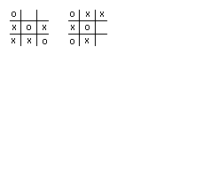
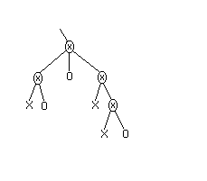
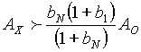
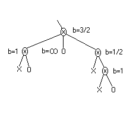

Introduction
Payola is a diplomacy variant with an added layer between the players and the units. Each player manages an account of silver pieces (AgP), which she bids in an effort to get units to do behave to her liking. Accounts are incremented after each build phase by an amount depending on the number of supply centres under each players' control.
Just as in diplomacy, payola has two movement phases for every 'payoff' phase. Players have to decide how to distribute AgP over multiple seasons and multiple units to achieve some strategic goal. Pitt Crandlemire brought up the question of how to distribute financing in his article http://www.diplom.org/Zine/S1996M/Pitt/Dipper.html. Pitt suggested that players divide Spring and Fall spending about evenly. Manus Hand, inventor and 'owner' of Payola, examined player behaviour in one game in http://devel.diplom.org/DipPouch/Zine/W1995A/Payola/strategy.html. Manus concluded that players tended split spending between Fall and Spring about 2:1. Neither article looked at the distribution question systematically.
In this article I will be introducing a method to help with AgP distribution decisions. The method presupposes a player has set a value on a strategic value of the goal to be achieved and a time span in which to achieve it. Although the method is conceived to apply to theatre engagements - isolated battles between two players where all involved units give highest priority to the strategic goal for the duration of the engagement - the method might also be generalisable to more complicated situations. It will turn out that a split of at least 2-1 between Fall and Spring spending is indeed quite good rule of thumb for many positions, with higher factors being more appropriate for closed positions.
To illustrate the method I will be using a toy domain. A toy domain is simplification of the space in which an algorithm is applied. Toy domains are often used for concept generation and sanity checking. I've chosen my toy domain to elucidate the concepts behind the method. Later I will have to generalise to the payola, else I will have failed to show that the method is validity for payola.
The toy domain I chose (from an idea in http://www.diplom.org/Zine/W1995A/Payola/notes.html) is payola tic-tac-toe [PT3]. PT3 is like the familiar game with Xs and Os are alternately placed on a 3x3 matrix. However, instead of the players each being in control of the placement of respectively the Xs and Os, placement is decided, like in payola, by the highest bid. Some rules for PT3 are:
Before demonstrating the optimal strategy for PT3, I'd like to note some of the essential differences between PT3 and payola:
The Method Applied to Payola Tic-Tac-Toe
The first step in illustrating the method will be to show how PT3 can be played on a tree instead of on a matrix.
The 'root' of the tree corresponds to the null state (empty 3x3 matrix). The 'daughters' of each node are then all the possible positions that can arise in the next move. Thus the root has nine daughters, 9x8=72 grand-daughters and so on. The sequence of moves in a game can be described by a path through the tree.
Each branch of the tree must ultimately end in a victory for either the X-player or the O-player. Thus all lowest level nodes (leaves) can be marked with a X or an O to show the victor. We also mark each node corresponding to a position from which a player can force a victory (regardless of the account values) with the victorious player's designation as well. Examples of O-nodes are shown in figure 1:

Figure 1: Examples of O-leaves
All nodes above the leaf level correspond to situations in which either player could conceivably win. In this case the outcome will depend on the bids of the two players as well as on their account balances. These mixed nodes are marked Ä.
Figure 2 shows what a typical pruned lower section of the PT3 tree might look like:

Figure 2: Typical Pruned Section of the Payola Tic-Tac-Toe Tree
Remembering that the lowest level nodes (leaves) consist exclusively of Xs and Os, it follows that the leaves' immediate antecedent's (their 'mother' nodes) must be mixed. (If all sibling leaves were of one gender - all Xs or all Os - then the outcome would determined. Hence the mother would be a leaf - a contradiction.)
We see that the player that reaches one of the lowest level mixed nodes with the most money can win by outbidding her opponent to reach one of 'her' leaves. The victory condition for the X-player at the lowest level mixed nodes is thus AX > AO, where AX and AO are the account balances of the two players.
We want to show how to determine the victory condition at any node in terms of the victory conditions for its children nodes. Since we know the victory condition at the lowest level mixed nodes, we can repeat the procedure, propagating the victory condition all the way to the root, thereby solving PT3.
Suppose the (already determined) victory conditions for the X-player at each of the N mixed children are given by:
AX > b1 * AO,
AX > b2 * AO, ...
AX > bN * AO
Where
bN ³ bN-1 ³ ... ³ b1
We assume bN > b1. If not, then the victory condition at the mother node is the same as the victory condition at the children nodes. Two special cases are bk= 0, corresponding to an X-node, and bk = ¥, corresponding to an O-node.
First let's look at the case where there are only two b values, bN and b1, so that the X-player will bid some amount DX on node 1 and bid zero on node N. We have to look at two outcomes. Either the O-player outbids the X-player (by a minuscule amount) to get to node N or else the X-player's bid is successful. For the X-player to be sure of a win, she has to be able to succeed in both cases:
In the first case, we take ANX = AX and ANO = AO - DX where 'N' refers to account balances at the node N. Then for the X-player to win we have to have
ANX > bN * ANO that is AX > bN * (AO - DX) so that DX > AO - AX / bN
In the second case we have to have
A1X > b1 * A1O that is AX - DX > b1 * AO so that DX < AX - b1 * AO
The two inequalities on DX will be fulfilled if and only if

This is the mother node victory condition for the X-player in case there are only two children nodes.
What about cases where there are more than 2 children nodes? Wouldn't it be possible to end up at some sister scenario K, with K between 2 and N-1? Yes, perhaps. But if both players act rationally this will not affect the victory condition. Here's why: the X-player will only bid an amount on scenario K that promises
bK £
where AKX > bK * AKO is the victory condition at node K
Similarly, the O-player will only bid an amount on a scenario K that guarantees that
bK ³
Since neither the X- nor the O-player alone can force selection of a K scenario with bK different from victory condition for X (nodes 1 and N), it follows that the presence of the nodes 2, .., N-1 do not affect the victory condition. The optimal play for each player is to bid an amount between AO - AX / bN and AX - b1 * AO.
Figure 3 shows the typical pruned section of the PT3 tree from figure 2 with the victory conditions written in:

Figure 3: Solved Section of the PT3 Tree